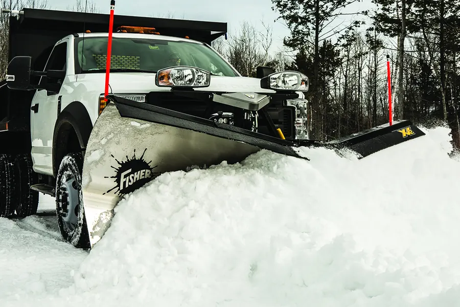
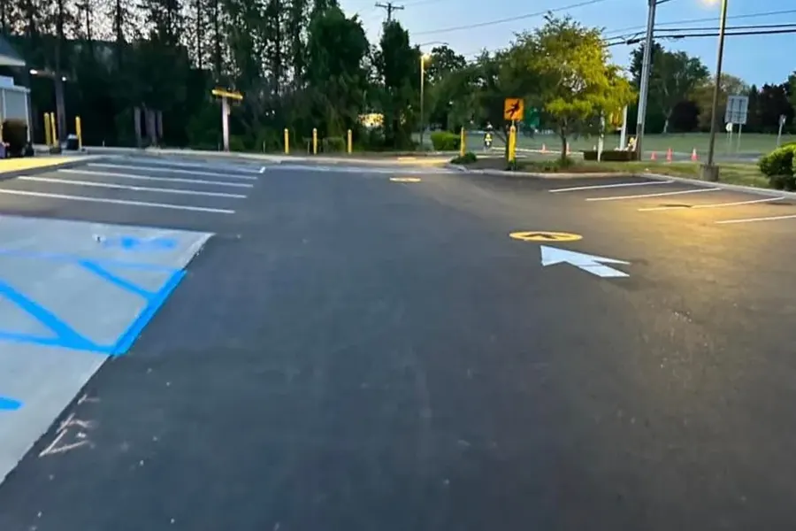

Seasonal and per storm · Saratoga County
Snow plowing,
salting and
removal
RDM Construction has managed snow and ice for commercial and residential properties across Saratoga Springs and Saratoga County for over 40 years. We plow, salt and haul with equipment sized for the job, not lawn tractors with plow attachments.
Winter service thresholds
Commercial properties cannot wait
A lot full of snow means customers cannot get in, employees cannot get to work, and liability exposure climbs for every hour it sits uncleared. We serve retail plazas, office parks, medical facilities, light industrial sites and multi unit residential properties with equipment and scheduling built for commercial scale.
Parking lot plowing
We plow commercial lots after each qualifying storm, pushing snow to designated areas that do not block fire lanes, accessible spaces or sightlines at exits. On large lots we stage the work so portions stay clear and usable while the rest is being cut. For high priority properties, medical facilities, grocery and 24 hour retail, we can schedule pre-dawn arrival so the lot is clear before opening.
Sidewalk and walkway clearing
Saratoga Springs requires property owners and businesses to clear sidewalks within a defined window after snowfall ends, and the city can clear it for you and bill you at a higher rate if you do not. Sidewalk and walkway clearing is part of the commercial scope, handled on the same visit as the lot.
De-icing and salting
Plowing removes snow. Salting handles the ice underneath it and prevents refreeze as temperatures drop overnight. We apply at rates that work without damaging pavement or creating runoff problems. For extreme cold events below 15 degrees Fahrenheit we use calcium chloride or magnesium chloride products, which stay effective where rock salt stops working.
In upstate New York ice is often the bigger hazard. A storm that drops three inches followed by an overnight drop to 10 degrees leaves a lot that looks cleared and behaves like a rink. The freeze thaw cycle from November through March creates black ice conditions on close to a weekly basis at peak winter.
Loading docks and access routes
Docks, service entrances and delivery routes need to stay passable even when the lot is only partly cut. We prioritize them in the commercial scope so operations do not stop because a truck cannot reach the dock.
Residential plowing
For homeowners in Saratoga Springs, Wilton, Malta and Ballston Spa we plow driveways and walkways on a seasonal or per storm basis, clearing to the road edge and cleaning up the apron where the town plow leaves a windrow. Straight single car, wide double, long rural driveways and turnarounds all get quoted on configuration and length.
We clear front walks, steps and entries as part of the residential scope, using handheld equipment where a truck plow cannot reach. Salt or a sand salt mix goes down after plowing. On sloped driveways, common in the hillier parts of Saratoga and Greenfield, ice management after plowing is not optional.
When plowing is not enough
Removal, meaning hauling snow off the property entirely, becomes the right call when the lot has run out of storage after a series of storms, when a single major storm exceeds the designated piling areas, when the property has no on site storage at all as in downtown Saratoga Springs, or when spring melt from large piles starts creating drainage problems near drains and loading areas.
Pre-treatment
For commercial properties that need proactive management we can apply liquid de-icer before a storm arrives. Pre-treatment stops ice bonding to the surface, which cuts post storm clearing time and material use. Ask about it when setting up a commercial contract.
Lock it in before October
Contracted customers are prioritized during major events. Route capacity fills before the season starts.
Winter service in Saratoga County
Commercial lots and residential driveways on seasonal and per storm contracts.



Snow service questions we get
When should I sign a seasonal snow contract?
September or October. Plowing contractors in the Capital Region fill their route capacity before the season starts, so waiting for the first forecast puts you in line behind everyone else who waited. We begin taking seasonal contracts in late summer.
What is a trigger depth and how does it work?
A trigger depth is the accumulation threshold that starts a plow visit. Most residential contracts trigger at 2 inches, commercial contracts at 1 to 2 inches depending on property type. If snow reaches the threshold we plow. If it does not, there is no visit and no charge. Trigger depths are documented in the service agreement before the season starts.
Does Saratoga Springs require businesses to clear sidewalks?
Yes. The city requires property owners and businesses to clear public sidewalks adjacent to their property within a set window after snowfall ends. If you do not, the city can clear the walk and bill you, typically at a higher rate than a private contractor charges. We include sidewalk clearing in commercial service scopes.
What is the difference between plowing and snow removal?
Plowing moves snow from the driving and parking surface to a pile elsewhere on the property. Removal means loading that snow onto trucks and hauling it off site. Plowing is standard service. Removal becomes necessary once a property has no storage capacity left, which usually happens after several consecutive storms without a real melt.
Is salting included with plowing?
Yes. Post storm salting is part of standard commercial and residential service, applied after each plow visit to handle residual ice and prevent refreeze. Below about 15 degrees Fahrenheit we switch to calcium chloride or magnesium chloride, which stay effective at temperatures where standard rock salt does not.
Do you offer pre-treatment or anti-icing?
Yes. For commercial properties that need proactive management, such as medical facilities, high traffic retail and properties with pedestrian heavy entries, we can apply liquid de-icer before a storm arrives. Pre-treatment stops ice bonding to the surface, which cuts post storm clearing time and material use.
What happens during a major storm when you have a full route?
Contracted customers are plowed before call in requests, in priority tier order, commercial and high need properties first and then residential. That ordering is the main practical reason to sign before the season rather than calling during a storm.
Am I liable if someone slips on my property after a storm?
Generally yes. Property owners and businesses in New York have a duty to maintain safe premises, which includes clearing snow and ice within a reasonable time after a storm. We are not attorneys and this is not legal advice, but it is a large part of why commercial property managers contract snow service rather than handling it reactively. Documented, contracted service is also useful evidence if a claim is made.
Where we work
The Greater Capital Region of New York State. If your address is not on this list, call and we will confirm coverage.
- Saratoga County
- Saratoga Springs, Wilton, Malta, Ballston Spa, Clifton Park, Mechanicville, Stillwater, Greenfield, Galway, Milton and Round Lake
- Albany County
- Albany, Colonie, Guilderland, Bethlehem, Cohoes, Watervliet, Latham and Loudonville
- Schenectady County
- Schenectady, Niskayuna, Glenville, Rotterdam and Scotia
- Rensselaer County
- Troy, East Greenbush, North Greenbush and Rensselaer
Free estimate. Written, itemized, no obligation.
Tell us the property, the problem, and a photo if you have one. We come out, assess the site, and send a written number. Call, text, or email and we will get you on the schedule.